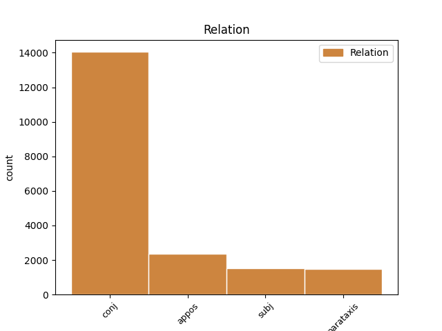
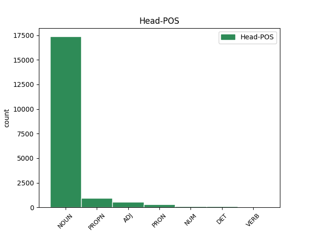
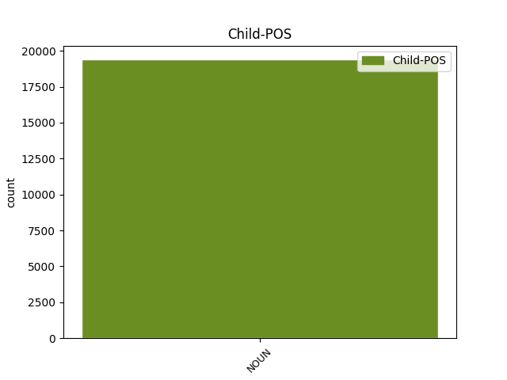

Distribution of features within this leaf



Agreement Rules sorted by frequency.
- When the dependent token is the conjunct(conj) of the head token, and the dependent token is NOUN.
1 Он _ _ _ _ 0 _ _ _
2 задумался _ _ _ _ 0 _ _ _
3 , _ _ _ _ 0 _ _ _
4 чуть _ _ _ _ 0 _ _ _
5 перекосив _ _ _ _ 0 _ _ _
6 худенькое _ _ _ _ 0 _ _ _
7 лицо _ _ _ _ 0 _ _ _
8 , _ _ _ _ 0 _ _ _
9 и _ _ _ _ 0 _ _ _
10 даже _ _ _ _ 0 _ _ _
11 перестал _ _ _ _ 0 _ _ _
12 выдергивать _ _ _ _ 0 _ _ _
13 цветы цветы NOUN _ Animacy=Inan|Case=Acc|Gender=Masc|Number=Plur 0 _ _ _
14 и _ _ _ _ 0 _ _ _
15 травинки травинка NOUN _ Animacy=Inan|Case=Acc|Gender=Fem|Number=Plur 13 conj _ SpaceAfter=No
16 , _ _ _ _ 0 _ _ _
17 в _ _ _ _ 0 _ _ _
18 его _ _ _ _ 0 _ _ _
19 коричневых _ _ _ _ 0 _ _ _
20 глазах _ _ _ _ 0 _ _ _
21 появилась _ _ _ _ 0 _ _ _
22 боль _ _ _ _ 0 _ _ _
23 - _ _ _ _ 0 _ _ _
24 так _ _ _ _ 0 _ _ _
25 трудно _ _ _ _ 0 _ _ _
26 вложить _ _ _ _ 0 _ _ _
27 в _ _ _ _ 0 _ _ _
28 чужую _ _ _ _ 0 _ _ _
29 душу _ _ _ _ 0 _ _ _
30 самые _ _ _ _ 0 _ _ _
31 простые _ _ _ _ 0 _ _ _
32 и _ _ _ _ 0 _ _ _
33 очевидные _ _ _ _ 0 _ _ _
34 истины _ _ _ _ 0 _ _ _
35 ! _ _ _ _ 0 _ _ _
1 Тот _ _ _ _ 0 _ _ _
2 день _ _ _ _ 0 _ _ _
3 начался _ _ _ _ 0 _ _ _
4 с _ _ _ _ 0 _ _ _
5 маленького _ _ _ _ 0 _ _ _
6 чуда _ _ _ _ 0 _ _ _
7 : _ _ _ _ 0 _ _ _
8 оказалось _ _ _ _ 0 _ _ _
9 , _ _ _ _ 0 _ _ _
10 низинный _ _ _ _ 0 _ _ _
11 , _ _ _ _ 0 _ _ _
12 сыроватый _ _ _ _ 0 _ _ _
13 ольшаник _ _ _ _ 0 _ _ _
14 , _ _ _ _ 0 _ _ _
15 примыкающий _ _ _ _ 0 _ _ _
16 с _ _ _ _ 0 _ _ _
17 севера _ _ _ _ 0 _ _ _
18 к _ _ _ _ 0 _ _ _
19 дачной _ _ _ _ 0 _ _ _
20 ограде _ _ _ _ 0 _ _ _
21 , _ _ _ _ 0 _ _ _
22 сказочно _ _ _ _ 0 _ _ _
23 богат _ _ _ _ 0 _ _ _
24 грибами гриб NOUN _ Animacy=Inan|Case=Ins|Gender=Masc|Number=Plur 0 _ _ _
25 свинушками свинушка NOUN _ Animacy=Inan|Case=Ins|Gender=Fem|Number=Plur 24 appos _ SpaceAfter=No
26 . _ _ _ _ 0 _ _ _
1 Ничто _ _ _ _ 0 _ _ _
2 не _ _ _ _ 0 _ _ _
3 проходит _ _ _ _ 0 _ _ _
4 бесследно _ _ _ _ 0 _ _ _
5 , _ _ _ _ 0 _ _ _
6 не _ _ _ _ 0 _ _ _
7 зарастает _ _ _ _ 0 _ _ _
8 травой _ _ _ _ 0 _ _ _
9 забвения _ _ _ _ 0 _ _ _
10 , _ _ _ _ 0 _ _ _
11 и _ _ _ _ 0 _ _ _
12 человеческая _ _ _ _ 0 _ _ _
13 душа душа NOUN _ Animacy=Inan|Case=Nom|Gender=Fem|Number=Sing 15 subj _ _
14 не _ _ _ _ 0 _ _ _
15 кладбище кладбище NOUN _ Animacy=Inan|Case=Nom|Gender=Neut|Number=Sing 0 _ _ _
16 , _ _ _ _ 0 _ _ _
17 а _ _ _ _ 0 _ _ _
18 святилище _ _ _ _ 0 _ _ _
19 , _ _ _ _ 0 _ _ _
20 дарующее _ _ _ _ 0 _ _ _
21 вечную _ _ _ _ 0 _ _ _
22 жизнь _ _ _ _ 0 _ _ _
23 образам _ _ _ _ 0 _ _ _
24 былого _ _ _ _ 0 _ _ _
25 . _ _ _ _ 0 _ _ _
1 Верно _ _ _ _ 0 _ _ _
2 , _ _ _ _ 0 _ _ _
3 по _ _ _ _ 0 _ _ _
4 той _ _ _ _ 0 _ _ _
5 же _ _ _ _ 0 _ _ _
6 причине _ _ _ _ 0 _ _ _
7 звучали _ _ _ _ 0 _ _ _
8 тут _ _ _ _ 0 _ _ _
9 так _ _ _ _ 0 _ _ _
10 ясно _ _ _ _ 0 _ _ _
11 , _ _ _ _ 0 _ _ _
12 открыто _ _ _ _ 0 _ _ _
13 непуганые _ _ _ _ 0 _ _ _
14 голоса _ _ _ _ 0 _ _ _
15 ушедших _ _ _ _ 0 _ _ _
16 ; _ _ _ _ 0 _ _ _
17 я _ _ _ _ 0 _ _ _
18 слышал _ _ _ _ 0 _ _ _
19 голос _ _ _ _ 0 _ _ _
20 деда _ _ _ _ 0 _ _ _
21 и _ _ _ _ 0 _ _ _
22 голос _ _ _ _ 0 _ _ _
23 своего _ _ _ _ 0 _ _ _
24 отца _ _ _ _ 0 _ _ _
25 , _ _ _ _ 0 _ _ _
26 и _ _ _ _ 0 _ _ _
27 слепые _ _ _ _ 0 _ _ _
28 дети _ _ _ _ 0 _ _ _
29 закричали _ _ _ _ 0 _ _ _
30 жалостно _ _ _ _ 0 _ _ _
31 : _ _ _ _ 0 _ _ _
32 " _ _ _ _ 0 _ _ _
33 Мальчик мальчик NOUN _ Animacy=Anim|Case=Nom|Gender=Masc|Number=Sing 36 parataxis _ SpaceAfter=No
34 , _ _ _ _ 0 _ _ _
35 куда _ _ _ _ 0 _ _ _
36 ты ты PRON _ Case=Nom|Number=Sing|Person=2 0 _ _ _
37 ? _ _ _ _ 0 _ _ _
38 " _ _ _ _ 0 _ _ _
Disagree Examples:
1 Порывшись _ _ _ _ 0 _ _ _
2 в _ _ _ _ 0 _ _ _
3 нижнем _ _ _ _ 0 _ _ _
4 ящике _ _ _ _ 0 _ _ _
5 стола _ _ _ _ 0 _ _ _
6 , _ _ _ _ 0 _ _ _
7 Семен _ _ _ _ 0 _ _ _
8 Еремеевич _ _ _ _ 0 _ _ _
9 вынул _ _ _ _ 0 _ _ _
10 папку _ _ _ _ 0 _ _ _
11 с _ _ _ _ 0 _ _ _
12 надписью надпись NOUN _ Animacy=Inan|Case=Ins|Gender=Fem|Number=Sing 0 _ _ _
13 " _ _ _ _ 0 _ _ _
14 кадры кадры NOUN _ Animacy=Inan|Case=Nom|Gender=Masc|Number=Plur 12 appos _ SpaceAfter=No
15 " _ _ _ _ 0 _ _ _
16 . _ _ _ _ 0 _ _ _
1 В _ _ _ _ 0 _ _ _
2 техническом _ _ _ _ 0 _ _ _
3 отделе _ _ _ _ 0 _ _ _
4 один _ _ _ _ 0 _ _ _
5 из _ _ _ _ 0 _ _ _
6 дворян _ _ _ _ 0 _ _ _
7 по _ _ _ _ 0 _ _ _
8 происхождению _ _ _ _ 0 _ _ _
9 , _ _ _ _ 0 _ _ _
10 другой _ _ _ _ 0 _ _ _
11 до _ _ _ _ 0 _ _ _
12 революции _ _ _ _ 0 _ _ _
13 черт _ _ _ _ 0 _ _ _
14 знает _ _ _ _ 0 _ _ _
15 кем _ _ _ _ 0 _ _ _
16 был _ _ _ _ 0 _ _ _
17 … _ _ _ _ 0 _ _ _
18 чуть _ _ _ _ 0 _ _ _
19 ли _ _ _ _ 0 _ _ _
20 не _ _ _ _ 0 _ _ _
21 дьяконом дьякон NOUN _ Animacy=Anim|Case=Ins|Gender=Masc|Number=Sing 0 _ _ _
22 - _ _ _ _ 0 _ _ _
23 в _ _ _ _ 0 _ _ _
24 общем _ _ _ _ 0 _ _ _
25 не _ _ _ _ 0 _ _ _
26 нашей _ _ _ _ 0 _ _ _
27 масти масть NOUN _ Animacy=Inan|Case=Gen|Gender=Fem|Number=Sing 21 parataxis _ SpaceAfter=No
28 . _ _ _ _ 0 _ _ _
1 - _ _ _ _ 0 _ _ _
2 Да _ _ _ _ 0 _ _ _
3 , _ _ _ _ 0 _ _ _
4 да _ _ _ _ 0 _ _ _
5 , _ _ _ _ 0 _ _ _
6 возле _ _ _ _ 0 _ _ _
7 садика садик NOUN _ Animacy=Inan|Case=Gen|Gender=Masc|Number=Sing 0 _ _ _
8 , _ _ _ _ 0 _ _ _
9 маленький _ _ _ _ 0 _ _ _
10 такой _ _ _ _ 0 _ _ _
11 домик домик NOUN _ Animacy=Inan|Case=Nom|Gender=Masc|Number=Sing 7 conj _ SpaceAfter=No
12 . _ _ _ _ 0 _ _ _
1 Два _ _ _ _ 0 _ _ _
2 крайних _ _ _ _ 0 _ _ _
3 окна окно NOUN _ Animacy=Inan|Case=Gen|Gender=Neut|Number=Sing 5 subj _ _
4 - _ _ _ _ 0 _ _ _
5 наши наш DET _ Case=Nom|Number=Plur 0 _ _ _
6 , _ _ _ _ 0 _ _ _
7 остальные _ _ _ _ 0 _ _ _
8 - _ _ _ _ 0 _ _ _
9 соседей _ _ _ _ 0 _ _ _
10 . _ _ _ _ 0 _ _ _
1 Два _ _ _ _ 0 _ _ _
2 крайних _ _ _ _ 0 _ _ _
3 окна _ _ _ _ 0 _ _ _
4 - _ _ _ _ 0 _ _ _
5 наши наш DET _ Case=Nom|Number=Plur 0 _ _ _
6 , _ _ _ _ 0 _ _ _
7 остальные _ _ _ _ 0 _ _ _
8 - _ _ _ _ 0 _ _ _
9 соседей сосед NOUN _ Animacy=Anim|Case=Gen|Gender=Masc|Number=Plur 5 conj _ SpaceAfter=No
10 . _ _ _ _ 0 _ _ _